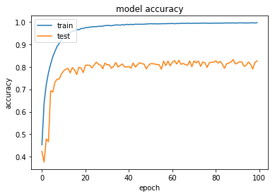

Binarynet on CIFAR10¶
Run this notebok  ¶
¶
In this example we demonstrate how to use Larq to build binarynet for CIFAR10 to achieve a validation accuracy around 83% on laptop hardware. On a Nvidia GTX1050ti MaxQ it takes approximately 200 minutes to train. Compared to the original papers, BinaryConnect: Training Deep Neural Networks with binary weights during propagations, and Binarized Neural Networks: Training Deep Neural Networks with Weights and Activations Constrained to +1 or -1, we do not impliment learning rate scaling, or image whitening.
Import Modules¶
First we import the modules. We use tensorflow, Keras and Larq.
import tensorflow as tf import larq as lq import numpy as np import matplotlib.pyplot as plt
Import CIFAR10 Dataset¶
We download and normalize the CIFAR10 dataset.
num_classes = 10 (train_images, train_labels), (test_images, test_labels) = tf.keras.datasets.cifar10.load_data() train_images = train_images.reshape((50000, 32, 32, 3)) test_images = test_images.reshape((10000, 32, 32, 3)) train_images = train_images.astype('float32') test_images = test_images.astype('float32') # Normalize pixel values to be between -1 and 1 train_images, test_images = train_images / 127.5 - 1., test_images / 127.5 - 1. train_labels = tf.keras.utils.to_categorical(train_labels, num_classes) test_labels = tf.keras.utils.to_categorical(test_labels, num_classes)
Build Binarynet¶
Here we build the binarynet model layer by layer using a keras sequential model
model = tf.keras.models.Sequential( [ lq.layers.QuantConv2D( 128, 3, kernel_quantizer="ste_sign", use_bias=False, kernel_constraint="weight_clip", input_shape=(32, 32, 3), ), tf.keras.layers.BatchNormalization(momentum=0.999, scale=False), tf.keras.layers.Activation("hard_tanh"), lq.layers.QuantConv2D( 128, 3, kernel_quantizer="ste_sign", input_quantizer="ste_sign", kernel_constraint="weight_clip", padding="same", use_bias=False, ), tf.keras.layers.MaxPool2D(pool_size=(2, 2), strides=(2, 2)), tf.keras.layers.BatchNormalization(momentum=0.999, scale=False), tf.keras.layers.Activation("hard_tanh"), lq.layers.QuantConv2D( 256, 3, kernel_quantizer="ste_sign", input_quantizer="ste_sign", kernel_constraint="weight_clip", padding="same", use_bias=False, ), tf.keras.layers.BatchNormalization(momentum=0.999, scale=False), tf.keras.layers.Activation("hard_tanh"), lq.layers.QuantConv2D( 256, 3, kernel_quantizer="ste_sign", input_quantizer="ste_sign", kernel_constraint="weight_clip", padding="same", use_bias=False, ), tf.keras.layers.MaxPool2D(pool_size=(2, 2), strides=(2, 2)), tf.keras.layers.BatchNormalization(momentum=0.999, scale=False), tf.keras.layers.Activation("hard_tanh"), lq.layers.QuantConv2D( 512, 3, kernel_quantizer="ste_sign", input_quantizer="ste_sign", kernel_constraint="weight_clip", padding="same", use_bias=False, ), tf.keras.layers.BatchNormalization(momentum=0.999, scale=False), tf.keras.layers.Activation("hard_tanh"), lq.layers.QuantConv2D( 512, 3, kernel_quantizer="ste_sign", input_quantizer="ste_sign", kernel_constraint="weight_clip", padding="same", use_bias=False, ), tf.keras.layers.MaxPool2D(pool_size=(2, 2), strides=(2, 2)), tf.keras.layers.BatchNormalization(momentum=0.999, scale=False), tf.keras.layers.Flatten(), tf.keras.layers.Activation("hard_tanh"), lq.layers.QuantDense( 1024, kernel_quantizer="ste_sign", input_quantizer="ste_sign", kernel_constraint="weight_clip", use_bias=False, ), tf.keras.layers.BatchNormalization(momentum=0.999, scale=False), tf.keras.layers.Activation("hard_tanh"), lq.layers.QuantDense( 1024, kernel_quantizer="ste_sign", input_quantizer="ste_sign", kernel_constraint="weight_clip", use_bias=False, ), tf.keras.layers.BatchNormalization(momentum=0.999, scale=False), tf.keras.layers.Activation("hard_tanh"), lq.layers.QuantDense( 10, kernel_quantizer="ste_sign", input_quantizer="ste_sign", kernel_constraint="weight_clip", use_bias=False, ), tf.keras.layers.BatchNormalization(momentum=0.999, scale=False), tf.keras.layers.Activation("softmax"), ] )
One can output a summary of the model.
lq.models.summary(model)
Layer Outputs # 1-bit # 32-bit ------------------------ ----------------- --------- ---------- quant_conv2d (-1, 30, 30, 128) 3456 0 batch_normalization_v1 (-1, 30, 30, 128) 0 384 activation (-1, 30, 30, 128) 0 0 quant_conv2d_1 (-1, 30, 30, 128) 147456 0 max_pooling2d (-1, 15, 15, 128) 0 0 batch_normalization_v1_1 (-1, 15, 15, 128) 0 384 activation_1 (-1, 15, 15, 128) 0 0 quant_conv2d_2 (-1, 15, 15, 256) 294912 0 batch_normalization_v1_2 (-1, 15, 15, 256) 0 768 activation_2 (-1, 15, 15, 256) 0 0 quant_conv2d_3 (-1, 15, 15, 256) 589824 0 max_pooling2d_1 (-1, 7, 7, 256) 0 0 batch_normalization_v1_3 (-1, 7, 7, 256) 0 768 activation_3 (-1, 7, 7, 256) 0 0 quant_conv2d_4 (-1, 7, 7, 512) 1179648 0 batch_normalization_v1_4 (-1, 7, 7, 512) 0 1536 activation_4 (-1, 7, 7, 512) 0 0 quant_conv2d_5 (-1, 7, 7, 512) 2359296 0 max_pooling2d_2 (-1, 3, 3, 512) 0 0 batch_normalization_v1_5 (-1, 3, 3, 512) 0 1536 flatten (-1, 4608) 0 0 activation_5 (-1, 4608) 0 0 quant_dense (-1, 1024) 4718592 0 batch_normalization_v1_6 (-1, 1024) 0 3072 activation_6 (-1, 1024) 0 0 quant_dense_1 (-1, 1024) 1048576 0 batch_normalization_v1_7 (-1, 1024) 0 3072 activation_7 (-1, 1024) 0 0 quant_dense_2 (-1, 10) 10240 0 batch_normalization_v1_8 (-1, 10) 0 30 activation_8 (-1, 10) 0 0 Total 10352000 11550 Total params: 10363550 Trainable params: 10355850 Non-trainable params: 7700
Model Training¶
Compile the model and train the model
model.compile( tf.keras.optimizers.Adam(lr=0.01,decay=0.0001), loss="categorical_crossentropy", metrics=["accuracy"], )
trained_model=model.fit( train_images, train_labels, batch_size=50, epochs=100, validation_data=(test_images, test_labels), shuffle=True )
Train on 50000 samples, validate on 10000 samples Epoch 1/100 50000/50000 [==============================] - 131s 3ms/step - loss: 1.5733 - acc: 0.4533 - val_loss: 1.6368 - val_acc: 0.4244 Epoch 2/100 50000/50000 [==============================] - 125s 3ms/step - loss: 1.1485 - acc: 0.6387 - val_loss: 1.8497 - val_acc: 0.3764 Epoch 3/100 50000/50000 [==============================] - 124s 2ms/step - loss: 0.9641 - acc: 0.7207 - val_loss: 1.5696 - val_acc: 0.4794 Epoch 4/100 50000/50000 [==============================] - 123s 2ms/step - loss: 0.8452 - acc: 0.7728 - val_loss: 1.5765 - val_acc: 0.4669 Epoch 5/100 50000/50000 [==============================] - 123s 2ms/step - loss: 0.7553 - acc: 0.8114 - val_loss: 1.0653 - val_acc: 0.6928 Epoch 6/100 50000/50000 [==============================] - 122s 2ms/step - loss: 0.6841 - acc: 0.8447 - val_loss: 1.0944 - val_acc: 0.6880 Epoch 7/100 50000/50000 [==============================] - 125s 3ms/step - loss: 0.6356 - acc: 0.8685 - val_loss: 0.9909 - val_acc: 0.7317 Epoch 8/100 50000/50000 [==============================] - 124s 2ms/step - loss: 0.5907 - acc: 0.8910 - val_loss: 0.9453 - val_acc: 0.7446 Epoch 9/100 50000/50000 [==============================] - 124s 2ms/step - loss: 0.5610 - acc: 0.9043 - val_loss: 0.9441 - val_acc: 0.7460 Epoch 10/100 50000/50000 [==============================] - 125s 3ms/step - loss: 0.5295 - acc: 0.9201 - val_loss: 0.8892 - val_acc: 0.7679 Epoch 11/100 50000/50000 [==============================] - 125s 2ms/step - loss: 0.5100 - acc: 0.9309 - val_loss: 0.8808 - val_acc: 0.7818 Epoch 12/100 50000/50000 [==============================] - 126s 3ms/step - loss: 0.4926 - acc: 0.9397 - val_loss: 0.8404 - val_acc: 0.7894 Epoch 13/100 50000/50000 [==============================] - 125s 2ms/step - loss: 0.4807 - acc: 0.9470 - val_loss: 0.8600 - val_acc: 0.7928 Epoch 14/100 50000/50000 [==============================] - 126s 3ms/step - loss: 0.4661 - acc: 0.9529 - val_loss: 0.9046 - val_acc: 0.7732 Epoch 15/100 50000/50000 [==============================] - 125s 3ms/step - loss: 0.4588 - acc: 0.9571 - val_loss: 0.8505 - val_acc: 0.7965 Epoch 16/100 50000/50000 [==============================] - 126s 3ms/step - loss: 0.4558 - acc: 0.9593 - val_loss: 0.8748 - val_acc: 0.7859 Epoch 17/100 50000/50000 [==============================] - 126s 3ms/step - loss: 0.4434 - acc: 0.9649 - val_loss: 0.9109 - val_acc: 0.7656 Epoch 18/100 50000/50000 [==============================] - 125s 2ms/step - loss: 0.4449 - acc: 0.9643 - val_loss: 0.8532 - val_acc: 0.7971 Epoch 19/100 50000/50000 [==============================] - 126s 3ms/step - loss: 0.4349 - acc: 0.9701 - val_loss: 0.8677 - val_acc: 0.7951 Epoch 20/100 50000/50000 [==============================] - 125s 2ms/step - loss: 0.4351 - acc: 0.9698 - val_loss: 0.9145 - val_acc: 0.7740 Epoch 21/100 50000/50000 [==============================] - 123s 2ms/step - loss: 0.4268 - acc: 0.9740 - val_loss: 0.8308 - val_acc: 0.8065 Epoch 22/100 50000/50000 [==============================] - 123s 2ms/step - loss: 0.4243 - acc: 0.9741 - val_loss: 0.8229 - val_acc: 0.8075 Epoch 23/100 50000/50000 [==============================] - 123s 2ms/step - loss: 0.4201 - acc: 0.9764 - val_loss: 0.8411 - val_acc: 0.8062 Epoch 24/100 50000/50000 [==============================] - 124s 2ms/step - loss: 0.4190 - acc: 0.9769 - val_loss: 0.8649 - val_acc: 0.7951 Epoch 25/100 50000/50000 [==============================] - 123s 2ms/step - loss: 0.4139 - acc: 0.9787 - val_loss: 0.8257 - val_acc: 0.8071 Epoch 26/100 50000/50000 [==============================] - 123s 2ms/step - loss: 0.4154 - acc: 0.9779 - val_loss: 0.8041 - val_acc: 0.8205 Epoch 27/100 50000/50000 [==============================] - 123s 2ms/step - loss: 0.4128 - acc: 0.9798 - val_loss: 0.8296 - val_acc: 0.8115 Epoch 28/100 50000/50000 [==============================] - 124s 2ms/step - loss: 0.4121 - acc: 0.9798 - val_loss: 0.8241 - val_acc: 0.8074 Epoch 29/100 50000/50000 [==============================] - 125s 2ms/step - loss: 0.4093 - acc: 0.9807 - val_loss: 0.8575 - val_acc: 0.7913 Epoch 30/100 50000/50000 [==============================] - 124s 2ms/step - loss: 0.4048 - acc: 0.9826 - val_loss: 0.8118 - val_acc: 0.8166 Epoch 31/100 50000/50000 [==============================] - 126s 3ms/step - loss: 0.4041 - acc: 0.9837 - val_loss: 0.8375 - val_acc: 0.8082 Epoch 32/100 50000/50000 [==============================] - 125s 2ms/step - loss: 0.4045 - acc: 0.9831 - val_loss: 0.8604 - val_acc: 0.8091 Epoch 33/100 50000/50000 [==============================] - 123s 2ms/step - loss: 0.4047 - acc: 0.9823 - val_loss: 0.8797 - val_acc: 0.7931 Epoch 34/100 50000/50000 [==============================] - 124s 2ms/step - loss: 0.4023 - acc: 0.9842 - val_loss: 0.8694 - val_acc: 0.8020 Epoch 35/100 50000/50000 [==============================] - 125s 3ms/step - loss: 0.3995 - acc: 0.9858 - val_loss: 0.8161 - val_acc: 0.8186 Epoch 36/100 50000/50000 [==============================] - 123s 2ms/step - loss: 0.3976 - acc: 0.9859 - val_loss: 0.8495 - val_acc: 0.7988 Epoch 37/100 50000/50000 [==============================] - 123s 2ms/step - loss: 0.4021 - acc: 0.9847 - val_loss: 0.8542 - val_acc: 0.8062 Epoch 38/100 50000/50000 [==============================] - 125s 2ms/step - loss: 0.3939 - acc: 0.9869 - val_loss: 0.8347 - val_acc: 0.8122 Epoch 39/100 50000/50000 [==============================] - 125s 2ms/step - loss: 0.3955 - acc: 0.9856 - val_loss: 0.8521 - val_acc: 0.7993 Epoch 40/100 50000/50000 [==============================] - 124s 2ms/step - loss: 0.3907 - acc: 0.9885 - val_loss: 0.9023 - val_acc: 0.7992 Epoch 41/100 50000/50000 [==============================] - 123s 2ms/step - loss: 0.3911 - acc: 0.9873 - val_loss: 0.8597 - val_acc: 0.8010 Epoch 42/100 50000/50000 [==============================] - 124s 2ms/step - loss: 0.3917 - acc: 0.9885 - val_loss: 0.8968 - val_acc: 0.7936 Epoch 43/100 50000/50000 [==============================] - 124s 2ms/step - loss: 0.3931 - acc: 0.9874 - val_loss: 0.8318 - val_acc: 0.8169 Epoch 44/100 50000/50000 [==============================] - 123s 2ms/step - loss: 0.3897 - acc: 0.9893 - val_loss: 0.8811 - val_acc: 0.7988 Epoch 45/100 50000/50000 [==============================] - 123s 2ms/step - loss: 0.3876 - acc: 0.9888 - val_loss: 0.8453 - val_acc: 0.8094 Epoch 46/100 50000/50000 [==============================] - 123s 2ms/step - loss: 0.3876 - acc: 0.9889 - val_loss: 0.8195 - val_acc: 0.8179 Epoch 47/100 50000/50000 [==============================] - 122s 2ms/step - loss: 0.3891 - acc: 0.9890 - val_loss: 0.8373 - val_acc: 0.8137 Epoch 48/100 50000/50000 [==============================] - 122s 2ms/step - loss: 0.3902 - acc: 0.9888 - val_loss: 0.8457 - val_acc: 0.8120 Epoch 49/100 50000/50000 [==============================] - 122s 2ms/step - loss: 0.3864 - acc: 0.9903 - val_loss: 0.9012 - val_acc: 0.7907 Epoch 50/100 50000/50000 [==============================] - 122s 2ms/step - loss: 0.3859 - acc: 0.9903 - val_loss: 0.8291 - val_acc: 0.8053 Epoch 51/100 50000/50000 [==============================] - 122s 2ms/step - loss: 0.3830 - acc: 0.9915 - val_loss: 0.8494 - val_acc: 0.8139 Epoch 52/100 50000/50000 [==============================] - 122s 2ms/step - loss: 0.3828 - acc: 0.9907 - val_loss: 0.8447 - val_acc: 0.8135 Epoch 53/100 50000/50000 [==============================] - 122s 2ms/step - loss: 0.3823 - acc: 0.9910 - val_loss: 0.8539 - val_acc: 0.8120 Epoch 54/100 50000/50000 [==============================] - 122s 2ms/step - loss: 0.3832 - acc: 0.9905 - val_loss: 0.8592 - val_acc: 0.8098 Epoch 55/100 50000/50000 [==============================] - 122s 2ms/step - loss: 0.3823 - acc: 0.9908 - val_loss: 0.8585 - val_acc: 0.8087 Epoch 56/100 50000/50000 [==============================] - 122s 2ms/step - loss: 0.3817 - acc: 0.9911 - val_loss: 0.8840 - val_acc: 0.7889 Epoch 57/100 50000/50000 [==============================] - 122s 2ms/step - loss: 0.3827 - acc: 0.9914 - val_loss: 0.8205 - val_acc: 0.8250 Epoch 58/100 50000/50000 [==============================] - 122s 2ms/step - loss: 0.3818 - acc: 0.9912 - val_loss: 0.8571 - val_acc: 0.8051 Epoch 59/100 50000/50000 [==============================] - 122s 2ms/step - loss: 0.3811 - acc: 0.9919 - val_loss: 0.8155 - val_acc: 0.8254 Epoch 60/100 50000/50000 [==============================] - 125s 3ms/step - loss: 0.3803 - acc: 0.9919 - val_loss: 0.8617 - val_acc: 0.8040 Epoch 61/100 50000/50000 [==============================] - 125s 2ms/step - loss: 0.3793 - acc: 0.9926 - val_loss: 0.8212 - val_acc: 0.8192 Epoch 62/100 50000/50000 [==============================] - 124s 2ms/step - loss: 0.3825 - acc: 0.9912 - val_loss: 0.8139 - val_acc: 0.8277 Epoch 63/100 50000/50000 [==============================] - 125s 2ms/step - loss: 0.3784 - acc: 0.9923 - val_loss: 0.8304 - val_acc: 0.8121 Epoch 64/100 50000/50000 [==============================] - 125s 2ms/step - loss: 0.3809 - acc: 0.9918 - val_loss: 0.7961 - val_acc: 0.8289 Epoch 65/100 50000/50000 [==============================] - 123s 2ms/step - loss: 0.3750 - acc: 0.9930 - val_loss: 0.8676 - val_acc: 0.8110 Epoch 66/100 50000/50000 [==============================] - 122s 2ms/step - loss: 0.3789 - acc: 0.9928 - val_loss: 0.8308 - val_acc: 0.8148 Epoch 67/100 50000/50000 [==============================] - 122s 2ms/step - loss: 0.3783 - acc: 0.9929 - val_loss: 0.8595 - val_acc: 0.8097 Epoch 68/100 50000/50000 [==============================] - 122s 2ms/step - loss: 0.3758 - acc: 0.9935 - val_loss: 0.8359 - val_acc: 0.8065 Epoch 69/100 50000/50000 [==============================] - 122s 2ms/step - loss: 0.3784 - acc: 0.9927 - val_loss: 0.8189 - val_acc: 0.8255 Epoch 70/100 50000/50000 [==============================] - 122s 2ms/step - loss: 0.3786 - acc: 0.9924 - val_loss: 0.8754 - val_acc: 0.8001 Epoch 71/100 50000/50000 [==============================] - 122s 2ms/step - loss: 0.3749 - acc: 0.9936 - val_loss: 0.8188 - val_acc: 0.8262 Epoch 72/100 50000/50000 [==============================] - 122s 2ms/step - loss: 0.3758 - acc: 0.9932 - val_loss: 0.8540 - val_acc: 0.8169 Epoch 73/100 50000/50000 [==============================] - 122s 2ms/step - loss: 0.3740 - acc: 0.9934 - val_loss: 0.8127 - val_acc: 0.8258 Epoch 74/100 50000/50000 [==============================] - 122s 2ms/step - loss: 0.3749 - acc: 0.9932 - val_loss: 0.8662 - val_acc: 0.8018 Epoch 75/100 50000/50000 [==============================] - 122s 2ms/step - loss: 0.3721 - acc: 0.9941 - val_loss: 0.8359 - val_acc: 0.8213 Epoch 76/100 50000/50000 [==============================] - 122s 2ms/step - loss: 0.3746 - acc: 0.9937 - val_loss: 0.8462 - val_acc: 0.8178 Epoch 77/100 50000/50000 [==============================] - 122s 2ms/step - loss: 0.3741 - acc: 0.9936 - val_loss: 0.8983 - val_acc: 0.7972 Epoch 78/100 50000/50000 [==============================] - 122s 2ms/step - loss: 0.3751 - acc: 0.9933 - val_loss: 0.8525 - val_acc: 0.8173 Epoch 79/100 50000/50000 [==============================] - 124s 2ms/step - loss: 0.3762 - acc: 0.9931 - val_loss: 0.8190 - val_acc: 0.8201 Epoch 80/100 50000/50000 [==============================] - 123s 2ms/step - loss: 0.3737 - acc: 0.9940 - val_loss: 0.8441 - val_acc: 0.8196 Epoch 81/100 50000/50000 [==============================] - 123s 2ms/step - loss: 0.3729 - acc: 0.9935 - val_loss: 0.8151 - val_acc: 0.8267 Epoch 82/100 50000/50000 [==============================] - 123s 2ms/step - loss: 0.3735 - acc: 0.9938 - val_loss: 0.8405 - val_acc: 0.8163 Epoch 83/100 50000/50000 [==============================] - 123s 2ms/step - loss: 0.3723 - acc: 0.9939 - val_loss: 0.8225 - val_acc: 0.8243 Epoch 84/100 50000/50000 [==============================] - 123s 2ms/step - loss: 0.3738 - acc: 0.9938 - val_loss: 0.8413 - val_acc: 0.8115 Epoch 85/100 50000/50000 [==============================] - 124s 2ms/step - loss: 0.3714 - acc: 0.9947 - val_loss: 0.9080 - val_acc: 0.7932 Epoch 86/100 50000/50000 [==============================] - 124s 2ms/step - loss: 0.3744 - acc: 0.9942 - val_loss: 0.8467 - val_acc: 0.8135 Epoch 87/100 50000/50000 [==============================] - 124s 2ms/step - loss: 0.3705 - acc: 0.9948 - val_loss: 0.8491 - val_acc: 0.8163 Epoch 88/100 50000/50000 [==============================] - 128s 3ms/step - loss: 0.3733 - acc: 0.9944 - val_loss: 0.8005 - val_acc: 0.8214 Epoch 89/100 50000/50000 [==============================] - 134s 3ms/step - loss: 0.3693 - acc: 0.9949 - val_loss: 0.7791 - val_acc: 0.8321 Epoch 90/100 50000/50000 [==============================] - 135s 3ms/step - loss: 0.3724 - acc: 0.9942 - val_loss: 0.8458 - val_acc: 0.8124 Epoch 91/100 50000/50000 [==============================] - 128s 3ms/step - loss: 0.3732 - acc: 0.9947 - val_loss: 0.8315 - val_acc: 0.8164 Epoch 92/100 50000/50000 [==============================] - 127s 3ms/step - loss: 0.3699 - acc: 0.9950 - val_loss: 0.8140 - val_acc: 0.8226 Epoch 93/100 50000/50000 [==============================] - 131s 3ms/step - loss: 0.3694 - acc: 0.9950 - val_loss: 0.8342 - val_acc: 0.8210 Epoch 94/100 50000/50000 [==============================] - 134s 3ms/step - loss: 0.3698 - acc: 0.9946 - val_loss: 0.8938 - val_acc: 0.8019 Epoch 95/100 50000/50000 [==============================] - 133s 3ms/step - loss: 0.3698 - acc: 0.9946 - val_loss: 0.8771 - val_acc: 0.8066 Epoch 96/100 50000/50000 [==============================] - 164s 3ms/step - loss: 0.3712 - acc: 0.9946 - val_loss: 0.8396 - val_acc: 0.8211 Epoch 97/100 50000/50000 [==============================] - 155s 3ms/step - loss: 0.3689 - acc: 0.9949 - val_loss: 0.8728 - val_acc: 0.8112 Epoch 98/100 50000/50000 [==============================] - 133s 3ms/step - loss: 0.3663 - acc: 0.9953 - val_loss: 0.9615 - val_acc: 0.7902 Epoch 99/100 50000/50000 [==============================] - 133s 3ms/step - loss: 0.3714 - acc: 0.9944 - val_loss: 0.8414 - val_acc: 0.8188 Epoch 100/100 50000/50000 [==============================] - 138s 3ms/step - loss: 0.3682 - acc: 0.9956 - val_loss: 0.8055 - val_acc: 0.8266
Model Output¶
We can now plot a the final validation accuracy and loss
plt.plot(trained_model.history['acc']) plt.plot(trained_model.history['val_acc']) plt.title('model accuracy') plt.ylabel('accuracy') plt.xlabel('epoch') plt.legend(['train', 'test'], loc='upper left') print(np.max(trained_model.history['acc'])) print(np.max(trained_model.history['val_acc']))
0.9956000019311905 0.8320999944210052

plt.plot(trained_model.history['loss']) plt.plot(trained_model.history['val_loss']) plt.title('model loss') plt.ylabel('loss') plt.xlabel('epoch') plt.legend(['train', 'test'], loc='upper left') print(np.min(trained_model.history['loss'])) print(np.min(trained_model.history['val_loss']))
0.3663262344896793 0.7790719392895699